01 - The problem
A scene with a sound, but no visual language.
Music subcultures are loud and specific to listen to, yet rarely have a coherent identity that looks the way they sound.
A whole identity grown from a single letterform - giving a music subculture a face to match its sound.
Music subcultures are loud and specific to listen to, yet rarely have a coherent identity that looks the way they sound.
I developed the mark through sketching, iteration and type experiments, then built the identity across print, motion, apparel and an app touchpoint.
A coherent system that can live on a poster, a tote, a screen and a wall without losing its edge.
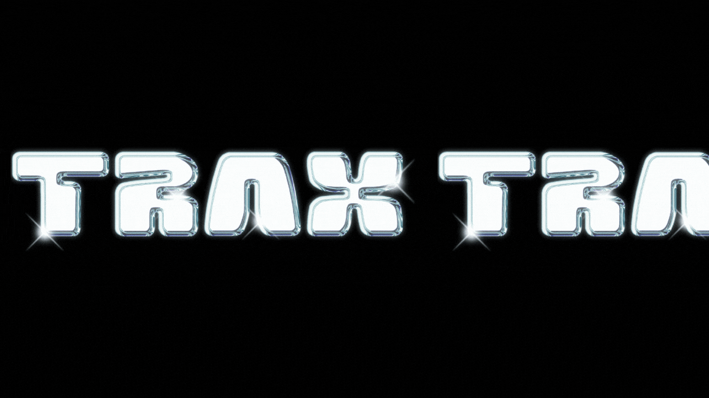
Direction / from mark to movementThe identity starts with a compressed, energetic wordmark. Every later decision - palette, emblem, type, motion and application - carries that same pressure through a different surface.
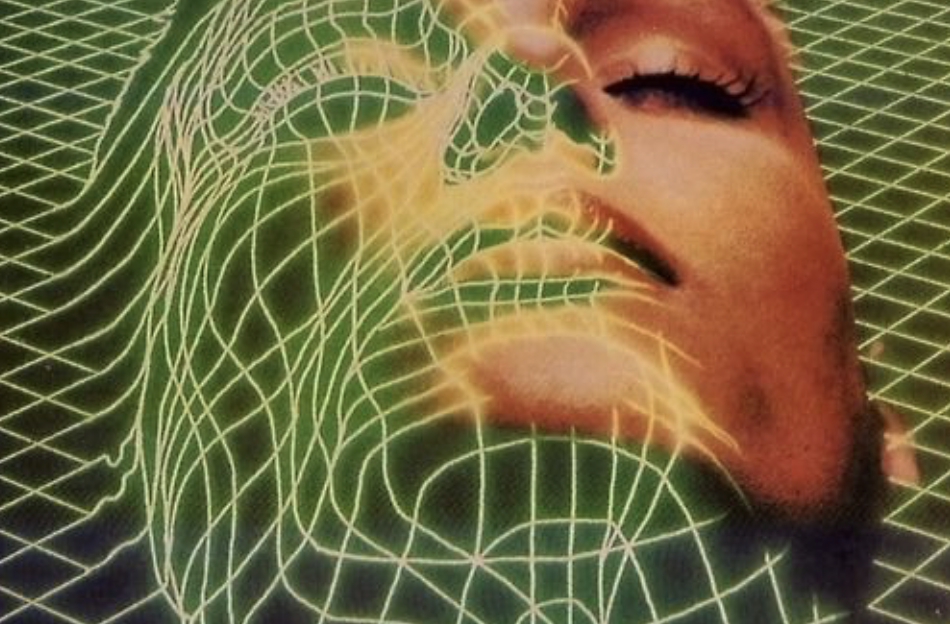
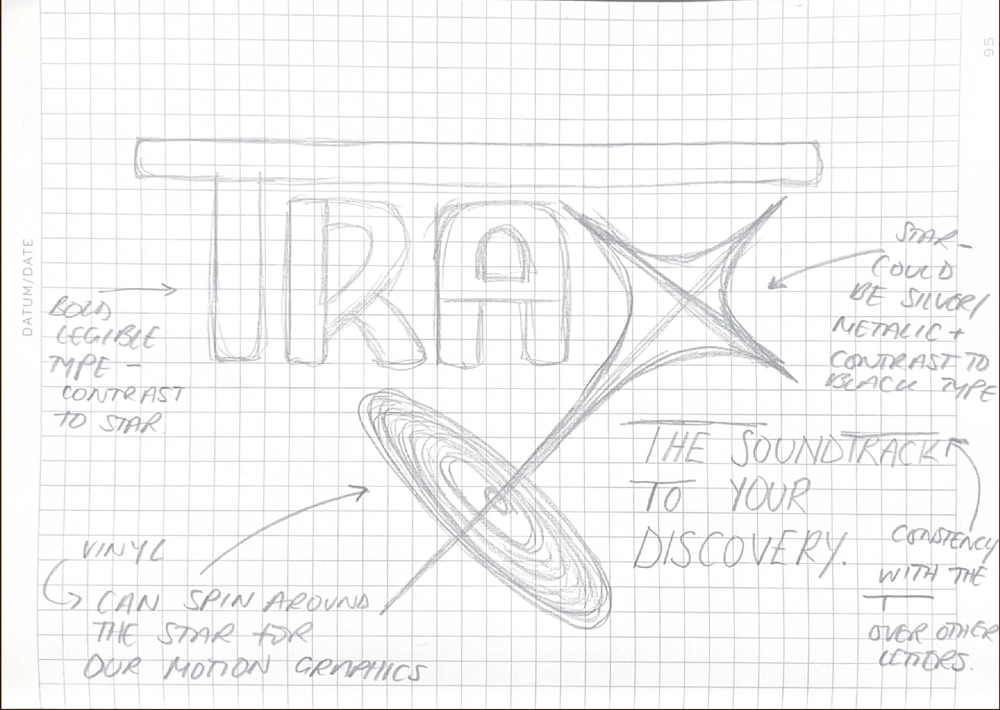
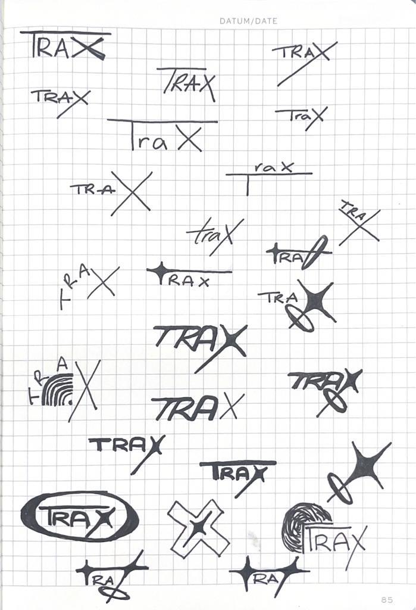
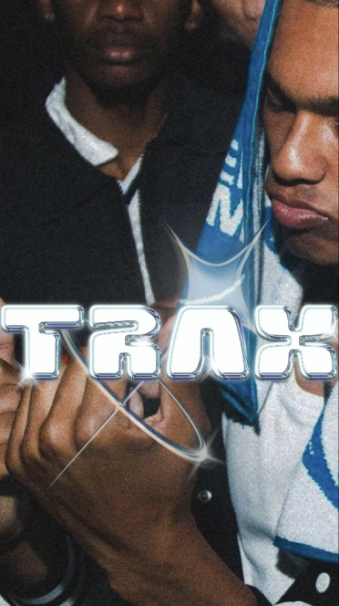
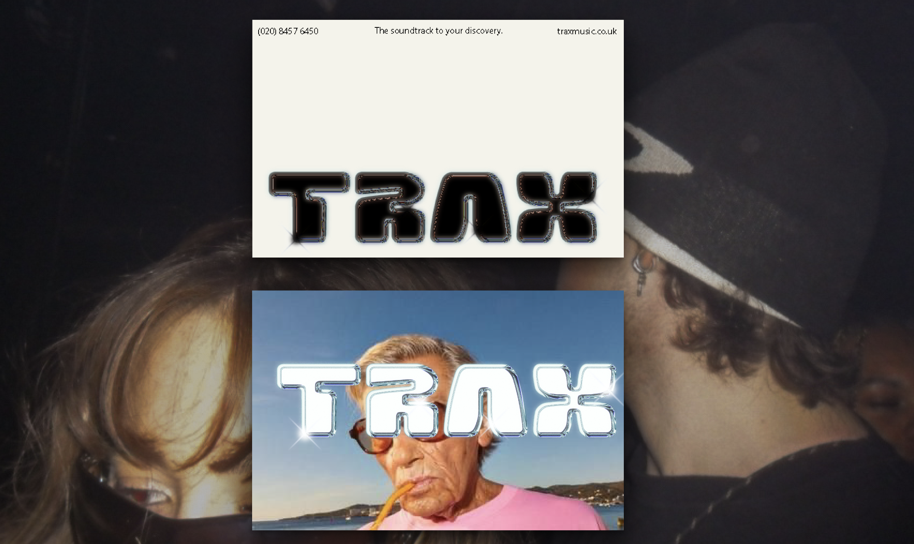
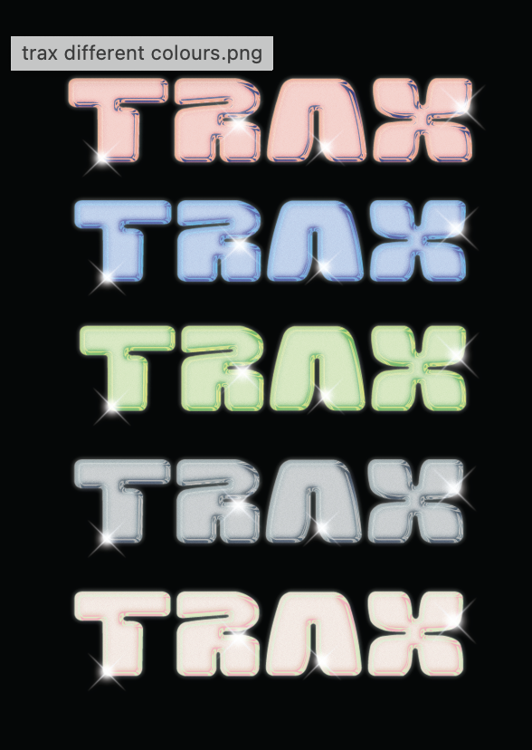
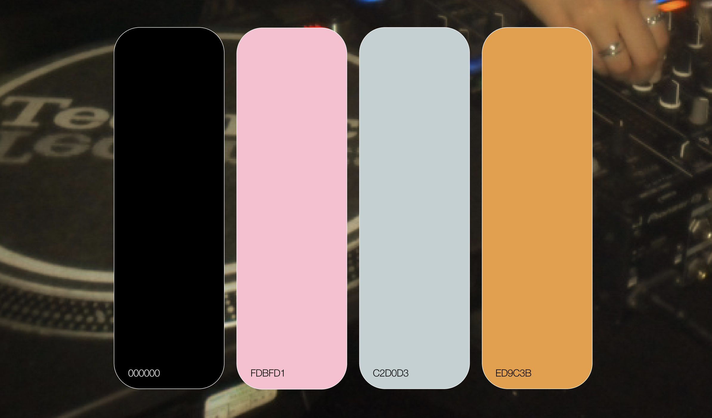
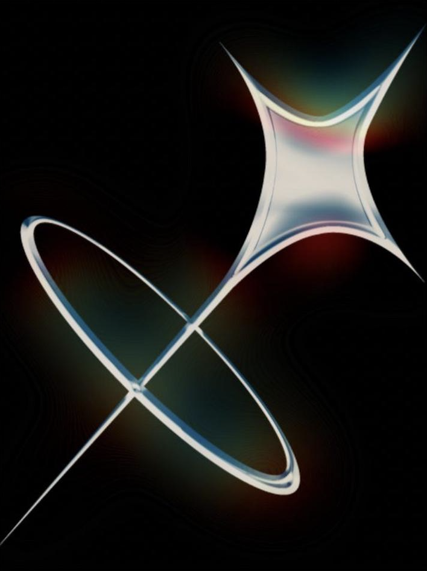
Craft / type made in-houseThe typeface was drawn specifically for Trax. It gives the identity a voice that belongs to the project rather than borrowing one from a library.
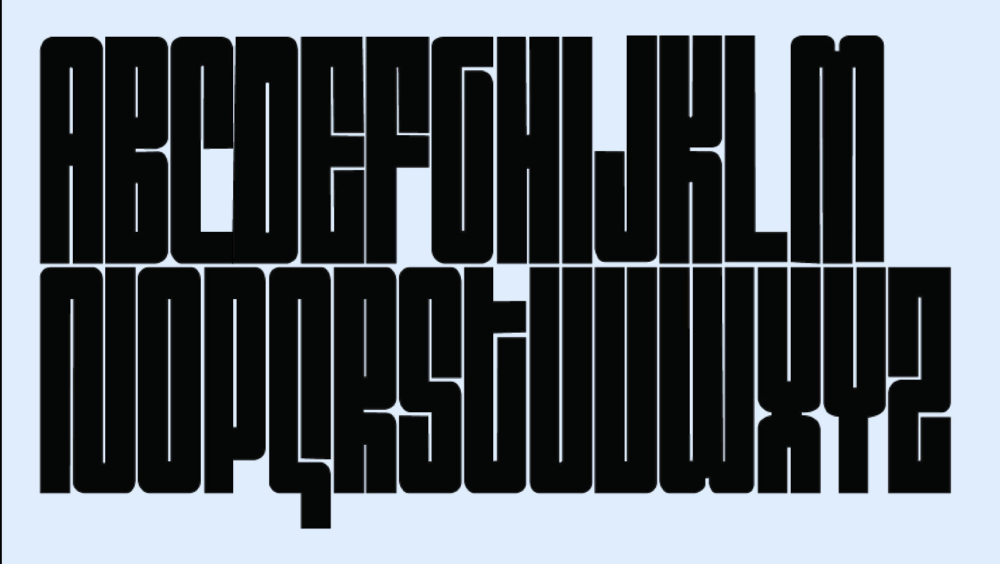
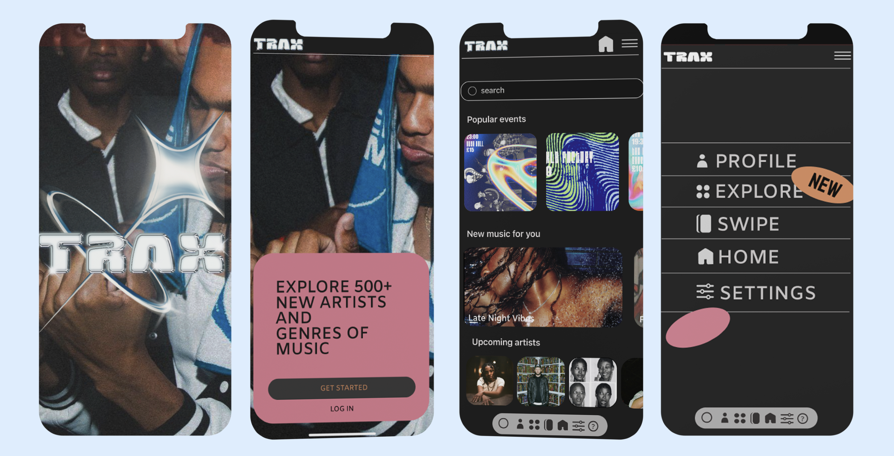
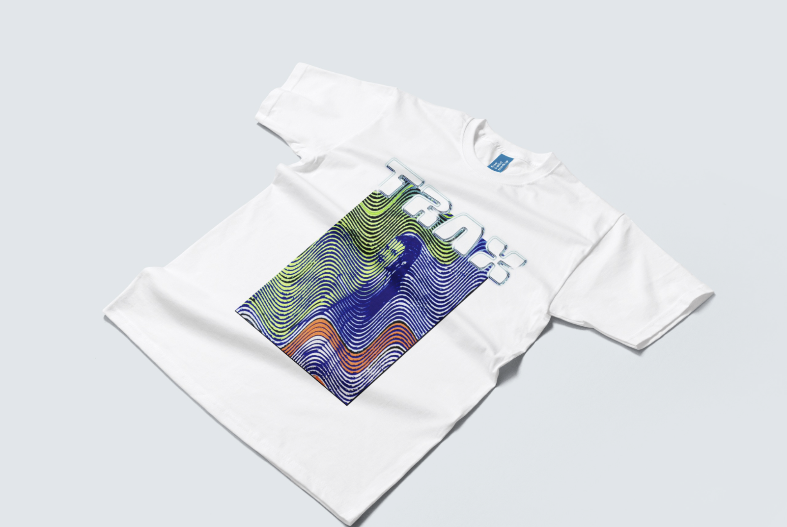

Output / poster artworkThe final poster artwork extends the identity into a physical event surface. The layered file is kept available as the source artwork below.